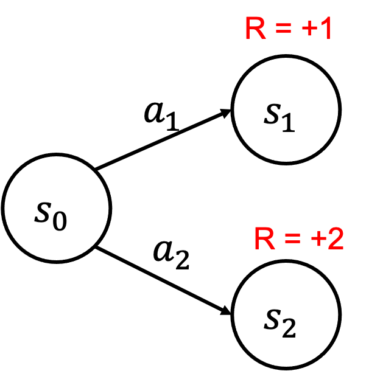
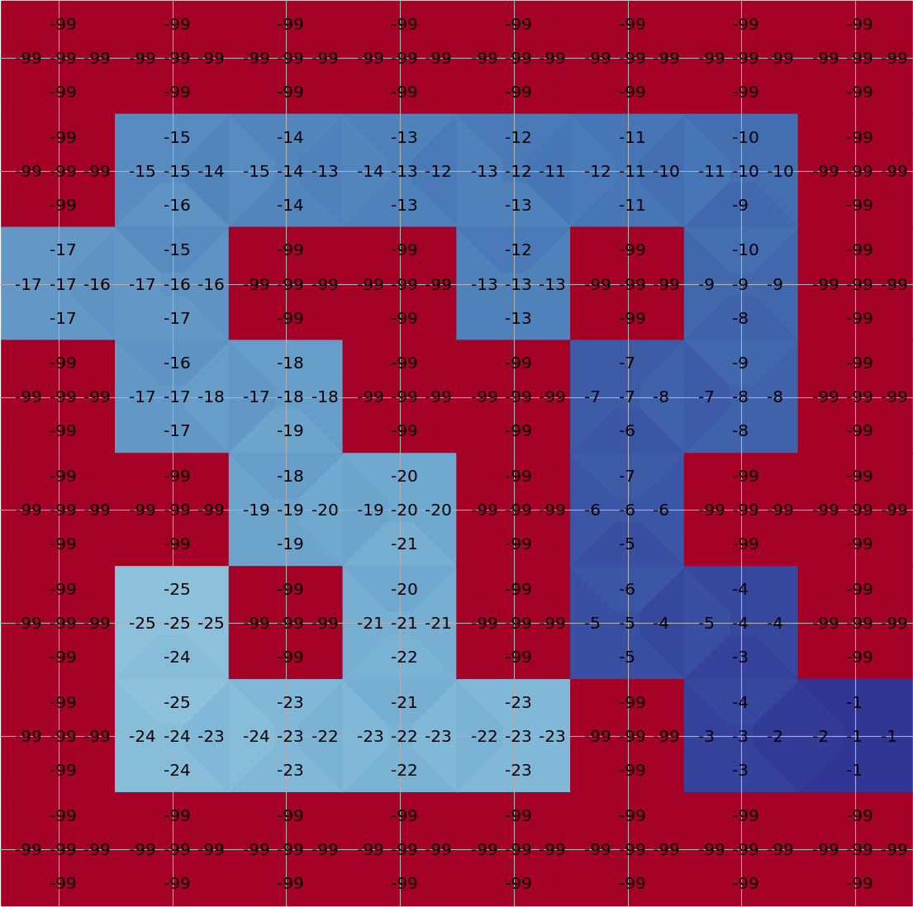

L13: A Taste of Deep RL Algorithms
Hao Su
Spring, 2021
Contents are based on Reinforcement Learning: An Introduction from Prof. Richard S. Sutton and Prof. Andrew G. Barto, and COMPM050/COMPGI13 taught at UCL by Prof. David Silver.
Review: Visualizations for MC and TD

Review: Monte-Carlo Methods
- Quick facts:
- MC methods learn directly from episodes of experience
- MC is model-free: no knowledge of MDP transitions / rewards
- MC uses the simplest possible idea: value = mean return
- Caveat: can only apply MC to episodic MDPs
- All episodes must terminate
Review: Temporal-Difference Methods
- Quick facts:
- TD methods learn directly from episodes of experience
- TD is model-free: no knowledge of MDP transitions / rewards
- TD learns from incomplete episodes, by bootstrapping
- TD updates a guess towards a guess
Review: Pros and Cons of MC vs. TD
- TD can learn before knowing the final outcome
- TD can learn online after every step
- MC must wait until end of episode before return is known
- TD can learn without the final outcome
- TD can learn from incomplete sequences
- MC can only learn from complete sequences
- TD works in continuing (non-terminating) environments
- MC only works for episodic (terminating) environments
Review: Pros and Cons of MC vs. TD (2)
- MC has high variance, zero bias
- Good convergence properties(even with function approximation)
- Not very sensitive to initial value
- Very simple to understand and use
- TD has low variance, some bias
- Usually more efficient than MC
- TD(0) converges to $V_\pi(s)$ (but not always with function approximation)
- More sensitive to initial value
Monte-Carlo-based versus TD-based RL
- Monte-Carlo and TD are two fundamental ideas of value estimation for policies.
- Each has its Pros and Cons.
- Based on them, there are two families of model-free RL algorithms, both well developed. Some algorithms leverage both.
- Fundamentally, it is about the balance between bias and variance (sample complexity).
This Lecture: REINFORCE and Deep Q-Learning
- Reason I:
- REINFORCE is Monte-Carlo-based
- Deep Q-Learning (DQN) is TD-based
- Reason II:
- REINFORCE only has a policy network
- DQN only has a value network
A Taxonomy of RL Algorithms and Examples
graph TD
l1("RL Algorithms")
l11("Model-Free RL")
l12("Model-Based RL")
l111("w/o Experience Buffer
(Monte-Carlo based)") l112("with Experience Buffer
(TD based)") l121("Learn the Model") l122("Given the Model") l1111("REINFORCE") l1121("Deep Q-Network") l1-->l11 l1-->l12 l11-->l111 l11-->l112 l12-->l121 l12-->l122 l111-->l1111 l112-->l1121 style l11 fill:#eadfa4 style l111 fill:#eadfa4 style l112 fill:#eadfa4 style l1111 fill:#eadfa4 style l1121 fill:#eadfa4
(Monte-Carlo based)") l112("with Experience Buffer
(TD based)") l121("Learn the Model") l122("Given the Model") l1111("REINFORCE") l1121("Deep Q-Network") l1-->l11 l1-->l12 l11-->l111 l11-->l112 l12-->l121 l12-->l122 l111-->l1111 l112-->l1121 style l11 fill:#eadfa4 style l111 fill:#eadfa4 style l112 fill:#eadfa4 style l1111 fill:#eadfa4 style l1121 fill:#eadfa4
Agenda
- Value-based RL
- Q-Learning
- Deep Q-Learning (DQN)
- Policy-based RL
- REINFORCE
Value-based RL
Q-Learning
Q-Learning for Tabular RL
- Suppose we are going to learn the Q-function, let us follow the above flow chart. We answer three questions:
- Given transitions $\{(s,a,s',r)\}$ from some trajectories, how to improve the current Q-function?
- By Temporal Difference learning, the update target for $Q(S,A)$ is
- $R+\gamma\max_a Q(S', a)$
- Take a small step towards the target
- $Q(S,A) \leftarrow Q(S,A)+\alpha[R+\gamma\max_a Q(S', a)-Q(S,A)]$
- By Temporal Difference learning, the update target for $Q(S,A)$ is
- Given $Q$, how to improve policy?
- Take the greedy policy based on the current $Q$
- $\pi(s)=\text{argmax}_a Q(s,a)$
- Take the greedy policy based on the current $Q$
- Given $\pi$, how to generate trajectories?
- Simply run the greedy policy in the environment.
- Any issues?
Failure Example
- Initialize Q
- $Q(s_0,a_1)=0,Q(s_0,a_2)=0$
- $\pi(s_0)=a_1$
- Iteration 1: take $a_1$ and update $Q$
- $Q(s_0,a_1)=1,Q(s_0,a_2)=0$
- $\pi(s_0)=a_1$
- Iteration 2: take $a_1$ and update $Q$
- $Q(s_0,a_1)=1,Q(s_0,a_2)=0$
- $\pi(s_0)=a_1$
- ...
- $Q$ stops to improve because the agent is too greedy!

$\epsilon$-Greedy Exploration
- The simplest and most effective idea for ensuring continual exploration
- With probability $1-\epsilon$ choose the greedy action
- With probability $\epsilon$ choose an action at random
- All $m$ actions should be tried with non-zero probability
- Formally, \[ \pi_*(a|s)= \begin{cases} \epsilon/m + 1-\epsilon, & \text{if}~~a=\text{argmax}_{a\in\mc{A}}~Q(s,a) \\ \epsilon/m, & \text{otherwise} \end{cases} \]
Q-Learning
Maze Example
- States: Agent's location
- Actions: N, E, S, W, stay
- Reward: -1 per time-step
- Termination: Reach goal

Running Q-learning on Maze
Plot with the tools in an awesome playground for value-based RL from Justin Fu
Convergence of Q-Learning
- tongzhou: add a proof here.
Exploration vs. Exploitation
- Two fundamental behaviours of RL agents
- Reinforcement learning is like trial-and-error learning
- The agent should discover a good policy
- From its experiences of the environment
- Without losing too much reward along the way
- Exploration
- finds more information about the environment
- may waste some time
- Exploitation
- exploits known information to maximize reward
- may miss potential better policy
- Balancing exploration and exploitation is a key problem of RL
Deep Q-Learning
Challenge of Representing $Q$
- How do we represent $Q(s,a)$?
- Maze has a discrete and small state space that we can deal with by an array.
- However, for many cases the state space is continuous, or discrete but huge:
Deep Q Network
- Use a neural network to parameterize $Q$:
- Input: state $s\in\bb{R}^n$
- Output: each dimension for the value of an action $Q(s, a;\theta)$

Training Deep Q Network
- Last lecture, we explained tabular TD learning:
- TD error: $\delta_t=R_{t+1}+\gamma V(S_{t+1})-V(S_t)$
- TD update: $V(S_t) \leftarrow V(S_t) + \alpha(G_t-V(S_t))$
- Temporal Difference can also be plugged in an optimization objective to derive the update of the $Q$ network
- Recall the Bellman optimality equation for action-value function: \[ Q^*(s,a)=\bb{E}[R_{t+1}+\gamma \max_{a'}Q^*(S_{t+1}, a')|S_t=s, A_t=a] \]
- We create a least-square regression problem accordingly: \[ \sum_{s\in\cal{S}, a\in\cal{A}}\|Q_{\th}(s,a)-\bb{E}_{s'\sim P(s'|s,a)}[R(s,a,s')+\gamma \max_{a'}Q_{\th}(s',a')]\|^2,\quad \mbox{where } R_{t+1}=R(s,a,s') \]
Optimization Formulation of TD Learning
- However, the objective is still intractable \[ \sum_{\color{red}{s\in\cal{S}, a\in\cal{A}}}\|Q_{\th}(s,a)-\bb{E}_{\color{red}{s'\sim P(s'|s,a)}}[R_{t+1}+\gamma \max_{a'}Q_{\th}(s',a')]\|^2 \]
- It is natural to build a new optimization problem that approximates the above: \[ L(\th)=\bb{E}_{\color{red}{(s,a,s')\sim Env}}[TD_{\th}(s,a,s')] \tag{TD loss} \] where $TD_{\th}(s,a,s')=\|Q_{\th}(s,a)-[R(s,a,s')+\gamma\max_{a'}Q_{\th}(s',a')]\|^2$.
- Note: How to obtain the $Env$ distribution has many options!
- It does not necessarily sample from the optimal policy.
- A suboptimal, or even bad policy (e.g., random policy), may allow us to learn a good $Q$.
- It is a cutting-edge research topic of showing suboptimality bound for non-optimal $Env$ distribution.
Online Deep Q-Learning
- As in the previous Q-learning, we consider a routine that we take turns to
- Sample certain transitions using the current $Q_{\th}$
- Update $Q_{\th}$ by minimizing the TD loss
- Exploration Replay buffer stores all transitions sampled from the environment with the current network
- Exploitation Sample transitions from the replay buffer to update the network